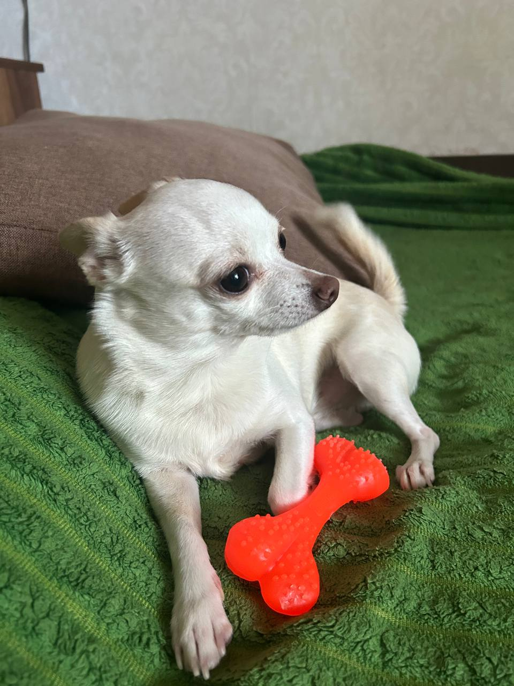

Медіа-галерея: Мікуленко Андрій
Мій помічник

Це приклад додавання зображення з атрибутом alt.
Мій геймплей (Локальне відео)
Ваш браузер не підтримує тег video.
Приклад відео з елементами керування (controls).
S.T.A.L.K.E.R. 2: Atmosphere (Music)